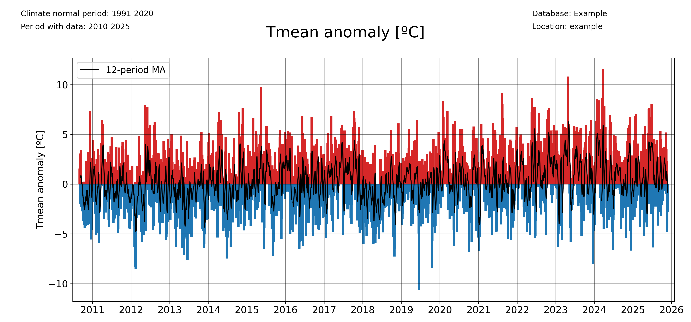
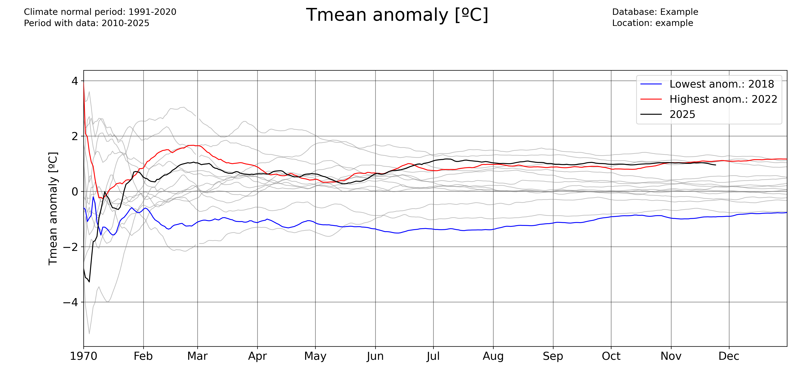

Plotting examples
The examples below show how pyClim can be used to make plots. The examples do not cover the whole functionalities of pyClim, but a subset of the most important plotting features. This documentation will be updated progressively to include the remaining functionalities.
All of the examples below make use of the example dataset included in this package, which the user can use for testing purposes.
Loading the example data
The first step for plotting is, of course, to load the data:
import numpy as np
import matplotlib.pyplot as plt
import matplotlib
import pandas as pd
import datetime as dt
from pandas import Grouper, DataFrame
import os
import glob
from scipy import stats, interpolate, signal
# Import pyclim
from pyclim_test import *
# Load the example data
path = "%s/data/" % os.getcwd()
csvfiles = glob.glob(os.path.join(path, "example_data.txt"))
print(csvfiles)
# Create metadata
metadata = pd.DataFrame(["example", "example", 361.00, -361.00, 461]).T
metadata.columns = ["Estacion", "Codigo", "latitud_OK", "longitud_OK", "Altitud"]
# Some useful variables
year_to_plot = 2025
climate_normal_period = [1991, 2020]
variables = ["Tmin", "Tmean", "Tmax", "Rainfall", "WindSpeed"]
database = "Example"
# Mapping variables
units_list = {} # ['ºC','ºC','ºC', 'm/s']
units_list["Tmin"] = "ºC"
units_list["Tmean"] = "ºC"
units_list["Tmax"] = "ºC"
units_list["Rainfall"] = "mm"
units_list["WindSpeed"] = "m/s"
wd_map = {
"N": 0,
"NNE": 22.5,
"NE": 45,
"ENE": 67.5,
"E": 90,
"ESE": 112.5,
"SE": 125,
"SSE": 147.5,
"S": 180,
"SSW": 202.5,
"SW": 225,
"WSW": 247.5,
"W": 270,
"WNW": 292.5,
"NW": 315,
"NNW": 337.5,
}
# Select metadata
metadatos_sta = metadata[metadata.ID == "example"]
codigo_sta = metadatos_sta.ID.values[0]
# nombres_mod[listanombres] = nombres_mod[listanombres].replace('/','-')
station_name = str(metadatos_sta.Name.values[0])
station_name = station_name.replace("/", "-")
plotdir = os.path.join(os.getcwd(), "plots/%s/%s" % (database, "example"))
plotdir = plotdir.replace("\\", "/")
if os.path.isdir(plotdir) == False:
try:
os.mkdir(plotdir)
except OSError:
print("Creation of the directory %s failed" % plotdir)
else:
print("Successfully created the directory %s " % plotdir)
# Read data
input_file = [x for x in csvfiles if codigo_sta in x][0]
df1 = pd.read_csv(input_file, sep=";", decimal=",", header=0, encoding="latin-1")
df1["Date"] = pd.to_datetime(df1.iloc[:, 0])
df1 = df1.set_index("Date")
df1["Day"] = df1.index.day
df1["Month"] = df1.index.month
df1["Year"] = df1.index.year
df1["Accumpcp"] = df1.groupby(df1.index.year)["Rainfall"].cumsum()
Plotting a timeseries of anomalies
The ‘freq’ parameter allows to choose the temporal aggregation of the anomalies. For example, for daily anomalies use freq=’1D’:
plot_anomalies(
df1_complete,
"Tmean",
"ºC",
climate_normal_period,
database,
station_name,
plotdir + "/daily_anomalies_Tmean.png",
window=12,
freq="1D",
)
And for monthly anomalies, freq=’1ME’:

plot_anomalies(
df1_complete,
"Tmean",
"ºC",
climate_normal_period,
database,
station_name,
plotdir + "/monthly_anomalies_Tmean.png",
window=12,
freq="1ME",
)
Plotting accumulated anomalies
Use the pyclim.plot_accumulated_anomalies() function to plot the accumulated anomalies during a year. Again, the ‘freq’ parameter allows the user to vary the temporal aggregation of the accumulated anomalies.
Accumulated anomalies from day to day:
plot_accumulated_anomalies(
df1_complete,
"Tmean",
"ºC",
2025,
climate_normal_period,
database,
station_name,
plotdir + "/Tmean_accum_anoms_daily.png",
freq="1D",
)
Weekly accumulated anomalies:

plot_accumulated_anomalies(
df1_complete,
"Tmean",
"ºC",
2025,
climate_normal_period,
database,
station_name,
plotdir + "/Tmean_accum_anoms_daily.png",
freq="1D",
)
Monthly accumulated anomalies:

plot_accumulated_anomalies(
df1_complete,
"Tmean",
"ºC",
2025,
climate_normal_period,
database,
station_name,
plotdir + "/Tmean_accum_anoms_daily.png",
freq="1D",
)
Computing and plotting record values
For computing the record values, use the pyclim.compute_daily_records() function. Then, one can plot the evolution of the number of high and low records with pyclim.plot_records_count(). The following example illustrates how to compute and plot the number of days in each year exceeding a daily record.
# Plot data from a certain period versus the climatological normal
records_df_allvars = pd.DataFrame()
for i in range(
len(
sorted(
list(set(df1_complete.columns) & set(variables)),
key=lambda x: variables.index(x),
)
)
):
variable = sorted(
list(set(df1_complete.columns) & set(variables)),
key=lambda x: variables.index(x),
)[i]
units = units_list[variable]
enddate = datetoday
# plot data
plot_data_vs_climate(
df1_complete,
climate_df_sep,
variable,
units,
ndaysago,
enddate,
cmap_anom_bars,
database,
climate_normal_period,
station_name,
plotdir + "/%speriodtimeseries_climatemedian19912020.png" % variable,
kind="bar",
fillcolor_gradient=False,
)
multiyearrecords_df_allvars = (
pd.DataFrame()
) # For saving multiple variable records' DataFrames
varis = ["Tmax", "Tmean", "Rainfall"]
units_varis = []
for i in range(len(varis)):
units_varis.append(units_list[varis[i]])
multiyearrecords_df = compute_daily_records(
df1_complete, varis[i], df1_complete.index.year.unique()
) # Compute records for variable
multiyearrecords_df_allvars = pd.concat(
[multiyearrecords_df_allvars, multiyearrecords_df], axis=1
)
# Plot annual records
plot_records_count(
multiyearrecords_df_allvars,
"Tmean",
database,
station_name,
plotdir + "/annual_records_Tmean.png",
freq="day",
) # Plot number of days exceeding daily records
Once more, the user can set the temporal frequency of the records’ aggregation using the ‘freq’ argument. In version 0.0.1, accepted values are ‘day’ (for daily records), ‘month’ for monthly records, and ‘year’ for absolute records.
plot_records_count(
multiyearrecords_df_allvars,
"Tmean",
database,
station_name,
plotdir + "/annual_records_Tmean.png",
freq="month",
) # Plot number of days exceeding daily records
Plotting data versus the climatological normal values
One interesting functionality of the pyClim package is the ability to plot data versus its climatological normal values, including the occurrence of record values given that a DataFrame including records is provided.

colors_anom_bars = ["#34b1eb", "#eb4034"]
levels_anom_bars = [0, 1]
cmap_anom_bars = get_continuous_cmap(
colors_anom_bars, levels_anom_bars, 2
) # Only works with HEX colors
# Plot data from a certain period versus the climatological normal
variable = "Tmean"
units = "ºC"
inidate = dt.datetime(2025, 1, 1)
enddate = dt.datetime(2025, 12, 31)
# Without records
plot_data_vs_climate(
df1_complete,
climate_df_sep,
variable,
units,
inidate,
enddate,
cmap_anom_bars,
database,
climate_normal_period,
station_name,
plotdir + "/%speriodtimeseries_climatemedian19912020.png" % variable,
kind="bar",
fillcolor_gradient=False,
)
# With records
plot_data_vs_climate_withrecords(
df1_complete,
climate_df_sep,
multiyearrecords_df_allvars,
"Tmean",
"ºC",
inidate,
enddate,
cmap_anom_bars,
database,
climate_normal_period,
station_name,
plotdir + "/%stimeseries_climatemedian19912020_withrecords.png" % varis[i],
kind="bar",
fillcolor_gradient=False,
)
Classify data by categories
Another visual way to represent the evolution of your data is to classify them by categories and then see the evolution of the occurrency of each category. This is done in pyClim with the pyclim.categories_evolution() function.
The user can see the evolution of each category, grouped by their monthly, seasonal and yearly occurrences. If no categories’ labels are given, the script computes the labels from the given categories. An example is shown below:

# Categorize data
categories = [0, 5, 10, 15, 20, 25, 30]
colors = ["blue", "cyan", "green", "yellow", "orange", "red"]
categories_evolution(
df1_complete,
"Tmean",
"ºC",
categories,
[],
colors,
database,
station_name,
plotdir + "/categories_Tmean_default.png",
time_scale="year",
)
The ‘time_scale’ parameter allows to modify the temporal aggregation of the data:

categories_evolution(
df1_complete,
"Tmean",
"ºC",
categories,
[],
colors,
database,
station_name,
plotdir + "/categories_Tmean_month_default.png",
time_scale="month",
)
Identifying trends in a dataset
pyClim also allows you to rapidly identify trends in a dataset. Several functions allow to do that.
The pyclim.plot_variable_trends() function, plots the time evolution of a certain variable. It also plots the mean value of each ‘averaging_period’ periods. The ‘grouping’ argument controls the temporal frequency of the variable aggregation, and the ‘grouping_stat’ controls the statistic to be plotted. It can be set to ‘mean’, if the user wants to know the temporal evolution of the average value of a variable, or to ‘sum’ (to see the evolution of the accumulated value of a variable, for example the total rainfall).
The optional argument ‘alldatamean’, which is set to True by default, allows to plot the average value of all the analysed period.

# Evolution of the mean value of a variable
plot_variable_trends(
df1_complete,
var,
units,
plotdir + "/%s_withmean.png" % var,
database,
station_name,
averaging_period=5,
grouping="year",
grouping_stat="mean",
rain_limit=1,
)
# Evolution of the accumulated value of a variable
plot_variable_trends(
df1_complete,
var,
units,
plotdir + "/%s_sum_withmean.png" % var,
database,
station_name,
averaging_period=5,
grouping="year",
grouping_stat="sum",
rain_limit=1,
)
Another function that allows to identify trends is the timeseries_extremevalues() function.